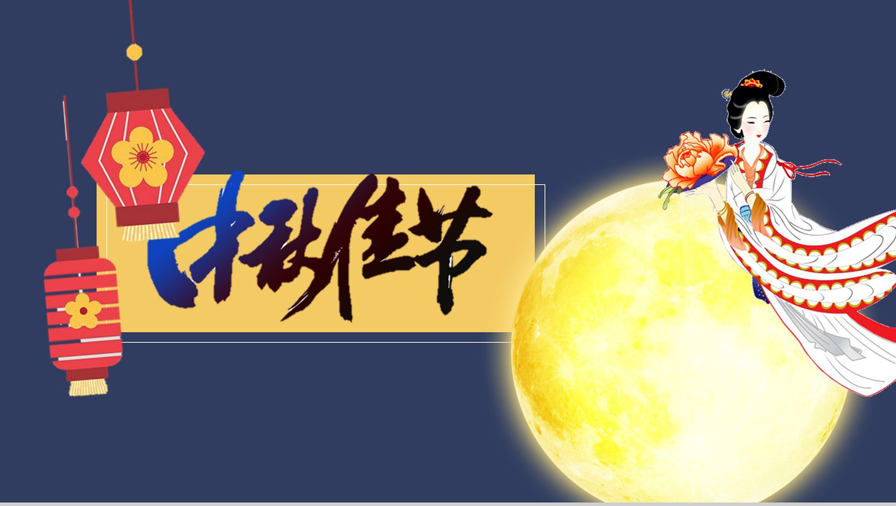

- 由来和意义
- 习俗
- 故事传说
- 美食
中秋节是什么
中秋节，又称祭月节、月光诞、月夕、秋节、仲秋节、拜月节、月娘节、月亮节、团圆节等，是中国民间传统节日。中秋节源自对天象的崇拜，由上古时代秋夕祭月演变而来。中秋节自古便有祭月、赏月、吃月饼、看花灯、赏桂花、饮桂花酒等民俗，流传至今，经久不息。
中秋节起源于上古时代，普及于汉代，定型于唐代。中秋节是秋季时令习俗的综合，其所包含的节俗因素，大都有古老的渊源。祭月作为民间过节的重要习俗之一，逐渐演化为赏月、颂月等活动。中秋节以月之圆兆人之团圆，为寄托思念故乡，思念亲人之情，祈盼丰收、幸福，成为丰富多彩、弥足珍贵的文化遗产。 最初“祭月节”的节期是在干支历二十四节气“秋分”这天，后来才调至农历八月十五日。中秋节与春节、清明节、端午节并称为中国四大传统节日。受中华文化的影响，中秋节也是东亚和东南亚一些国家尤其是当地的华人华侨的传统节日。 |
2006年5月20日，国务院将其列入首批国家级非物质文化遗产名录。自2008年起中秋节被列为国家法定节假日。
发展
中秋节源自对天象的崇拜，由上古时代秋夕祭月演变而来。祭月，在中国是一种十分古老的习俗，是古代中国一些地方古人对“月神”的一种崇拜活动。在二十四节气的秋分时节，是古老的“祭月节”。中秋节则是由传统的“秋分祭月”而来。在古代农耕社会，古人认为月亮的运行同农业生产和季节变化有很大关系，因此祭月就成了一项重要祭祀活动。祭月，作为民间做节的重要礼俗之一，逐渐演化为赏月、颂月等活动。
中秋节普及于汉代，汉代是中国南北各地的经济文化交流融合时期，各地文化上的交流使节俗融合传播。“中秋”一词现存文字记载最早见于汉代文献，成书于两汉之间的《周礼》（世传为周公旦所著，实际上成书于两汉之间）中说，先秦已有“中秋夜迎寒”、“中秋献良裘”、“秋分夕月（拜月）”的活动。据记载，在汉代时，有在中秋或立秋之日敬老、养老，赐以雄粗饼的活动。晋时亦有出现中秋赏月之举的文字记载，不过不太普遍。晋之前中秋节在中国北方地区还不流行。
.jpg) |
唐代时中秋风俗在中国北方地区已流行。在唐代中秋节成为了官方认定的全国性节日。《唐书·太宗记》记载有“八月十五中秋节”。中秋赏月风俗在唐代的长安一带极盛，许多诗人的名篇中都有咏月的诗句。并将中秋与嫦娥奔月、吴刚伐桂、玉兔捣药、杨贵妃变月神、唐明皇游月宫等神话故事结合起，使之充满浪漫色彩，玩月之风方才大兴。唐代是传统节日习俗揉合定型的重要时期，其主体部分传承至今。
北宋时期，正式定阴历八月十五为“中秋节”。文学作品中出现了“小饼如嚼月，中有酥和饴”的节令食品。如孟元老《东京梦华录》说：“中秋夜，贵家结饰台榭，民间争占酒楼玩月”；而且“弦重鼎沸，近内延居民，深夜逢闻笙芋之声，宛如云外。间里儿童，连宵婚戏；夜市骈阗，至于通晓”。
明清时期，岁时节日中世俗的情趣愈益浓厚。明清两朝的赏月活动，“其祭果饼必圆”，各家都要设“月光位”，在月出方向“向月供而拜”。陆启泓《北京岁华记》载：“中秋夜，人家各置月宫符象，符上免如人立；陈瓜果于庭，饼面绘月宫蟾免；男女肃拜烧香，旦而焚之。”《帝京景物略》中也说：“八月十五祭月，其饼必圆，分瓜必牙错，瓣刻如莲花。……其有妇归宁者，是日必返夫家，曰团圆节也。
发展至今，吃月饼已经是中国南北各地过中秋节的必备习俗。月饼象征着大团圆，人们把它当作节日食品，用它祭月、赠送亲友。除月饼外，各种时令鲜果干果也是中秋夜的美食。中秋节时，云稀雾少，月光皎洁明亮，民间有赏月、祭月、吃月饼、吃甜薯、提灯笼、舞草龙、树中秋、砌宝塔等一系列的节庆活动。返回顶部
风俗习惯
祭月（拜月） 祭月，在中国是一种十分古老的习俗，实际上是古人对“月神”的一种崇拜活动。在古代有“秋暮夕月”的习俗。夕月，即拜祭月神。自古以来，在广东部分地区，人们都有在中秋晚上拜祭月神（拜月娘、拜月光）的习俗。拜月，设大香案，摆上月饼、西瓜、苹果、红枣、李子、葡萄等祭品。在月下，将“月神”牌位放在月亮的那个方向，红烛高燃，全家人依次拜祭月亮，祈求福佑。祭月赏月，托月追思，表达了人们的美好祝愿。祭月作为中秋节重要的祭礼之一，从古代延续至今，逐渐演化为民间的赏月、颂月活动，同时也成为现代人渴望团聚、寄托对生活美好愿望的主要形态。 |
.jpg) |
树中秋 在广东一些地方，中秋节有一种富有情趣的传统风俗，叫“树中秋”。树亦作竖，即将灯彩高竖起来之意，所以也叫“竖中秋”。小孩子们在家长协助下用竹纸扎成兔仔灯、杨桃灯或正方形的灯，横挂在短竿中，再竖起于高杆上，高举起来，彩光闪耀，为中秋再添一景。孩子们多互相比赛，看谁竖得高，竖得多，灯彩最精巧。入夜，满城灯火，如繁星点点，和天上明月争辉，以此庆贺中秋。 |
.jpg) |
拜祖先 广东潮汕地区中秋节习俗。中秋节当天下午，各家厅里就摆台设祭，置祖先神主牌，献上各色供品。祭毕，把祭品逐样烹调，合家同食一次丰盛晚餐。 |
.jpg) |
舞火龙 舞火龙，是香港中秋节最富传统特色的习俗。从每年农历八月十四晚起，铜锣湾大坑地区就一连三晚举行盛大的舞火龙活动。这火龙长达70多米，用珍珠草扎成32节的龙身，插满了长寿香。盛会之夜，这个区的大街小巷，一条条蜿蜒起伏的火龙在灯光与龙鼓音乐下欢腾起舞，很是热闹。 |
.jpg) |
耍禄仔
“耍禄仔”是过去中秋节十分流行的儿童游戏，以柚子壳刻通花，中可悬灯，儿童提着成群结队游乐，或提着各种动物、瓜果形状的灯色，沿街踏歌而行，一边唱着“耍禄歌”：“耍禄仔，耍禄儿，点明灯。识斯文者重斯文，天下读书为第一，莫谓文章无用处，古云一字值千金，自有书中出贵人……”儿童们在尽情游乐之后散去，各自回家吃月饼果品之类。
扎灯笼
古时在广东，中秋临近时，小孩子们在家长协助下，用竹纸扎成兔仔灯、杨桃灯或正方形的灯。此外，还有很多小朋友会用水果皮扎灯笼。另外，还有木瓜灯、香蕉灯等，最简便的是“柚皮灯”，几乎家家户户的小孩都能做。扎好的灯笼除了用来“树中秋”，更有情侣提着灯笼依偎赏月。
玩花灯
| 中秋节，有许多的游戏活动，首先是玩花灯。中秋是中国三大灯节之一，过节要玩灯。当然，中秋没有像元宵节那样的大型灯会，玩灯主要只是在家庭、儿童之间进行的。早在北宋《武林旧事》中，记载中秋夜节俗，就有将“一点红”灯放入江中漂流玩耍的活动。中秋玩花灯，多集中在南方。如佛山秋色会上，就有各种各式的彩灯：芝麻灯、蛋壳灯、刨花灯、稻草灯、鱼鳞灯、谷壳灯、瓜籽灯及鸟兽花树灯等，令人赞叹。在广西南宁一带，除了以纸竹扎各式花灯让儿童玩耍外，还有很朴素的柚子灯、南瓜灯、桔子灯。所谓柚子灯，是将柚子掏空，刻出简单图案，穿上绳子，内点蜡烛即成，光芒淡雅。南瓜灯、桔子灯也是将瓤掏去而成。虽然朴素，但制作简易，很受欢迎，有些孩子还把柚子灯漂入池河水中作游戏。广西有简单的户秋灯，是以六个竹篾圆圈扎成灯，外糊白纱纸，内插蜡烛即成，挂于祭月桌旁祭月用，也可给孩子们玩。如今两广的不少地区，在中秋夜布置灯会，扎制用电灯照亮的大型现代灯彩，还有用塑料制成的各式新型花灯供儿童玩，但却少了一份旧时灯彩的纯朴之美。 |
.jpg)
烧斗香
江苏中秋夜要烧斗香。香斗四周糊有纱绢，绘上月宫景色。也有香斗以线香编成，上面插有纸扎的魁星及彩色旌旗。上海民间还有烧香斗的风俗。
听香
听香是古代流传在台地区的中秋习俗。古时想得到佳偶的少女，先在家中神明前烧香祭拜，诉说心事，祈求神明指示听香的方向，然后依指示方向在路上无意间或偷听到的第一句话，牢记在心，回家再掷茭，判断来解释所占卜事情的吉凶。例如卜占终身大事，而听到的话是吃甜饼或花开、月圆，就表示吉兆，喜事近了。
烧塔
燃宝塔灯
中秋灯与元宵灯不大相同。中秋夜点的是宝塔灯，而且主要在南方流行。宝塔灯，即由村童捡拾瓦砾搭成宝塔形状的灯。清代苏州村民在旷野用瓦叠成七级宝塔，中间供地藏王，四周燃灯，称为“塔灯”。广州儿童燃“番塔灯”，用碎瓦为之；还有柚皮灯，用红柚皮雕刻各种人物花草，中间安放一个琉璃盏，红光四射。另外南方还广泛流传着烧瓦子灯（或称烧花塔、烧瓦塔、烧番塔）的游戏，在江西、广东、广西等地都有流传。如《中华全国风俗志》卷五记：江西“中秋夜，一般孩子于野外拾瓦片，堆成一圆塔形，有多孔。黄昏时于明月下置木柴塔中烧之。俟瓦片烧红，再泼以煤油，火上加油，霎时四野火红，照耀如昼。直至夜深，无人观看，始行泼息，是名烧瓦子灯”。广东潮州的烧瓦塔，也是以砖瓦砌成空心塔，填入树枝烧起火来。同时还燃烟堆，就是将草柴堆成堆，在拜月结束后烧燃。而在广西边疆一带的烧番塔，亦类似这种活动。福建晋江亦有“烧塔仔”的活动。
中秋宴俗
古时中国的中秋宴俗，以宫廷最为精雅。如明代宫廷时兴吃螃蟹。螃蟹用蒲包蒸熟后，众人围坐品尝，佐以酒醋。食毕饮苏叶汤，并用之洗手。宴桌区周，摆满鲜花、大石榴以及其他时鲜，演出中秋的神话戏曲。清宫多在某一院内向东放一架屏风，屏风两侧搁置鸡冠花、毛豆技、芋头、花生、萝卜、鲜藕。屏风前设一张八仙桌，上置一个特大的月饼，四周缀满糕点和瓜果。祭月完毕，按皇家人口将月饼切作若干块，每人象征性地尝一口，名曰“吃团圆饼”。清宫月饼之大，令人难以想象。像末代皇帝溥仪赏给总管内务大臣绍英的一个月饼，便是“径约二尺许，重约二十斤”。
玩兔爷
玩兔儿爷是流行于中国北方地区的中秋习俗。玩兔儿爷的中秋习俗起始约在明末。“老北京”过中秋，除了吃月饼，还有一项习俗是供兔儿爷。“兔儿爷”兔首人身，披甲胄，插护背旗，或坐或立，或捣杵或骑兽，竖着两只大耳朵。最初，“兔儿爷”用于中秋拜月祭祀。到了清代，“兔儿爷”逐步转变为儿童的中秋节玩具。
明人纪坤（约一 六三六年前后在世）的《花王阁剩稿》：“京中秋节多以泥抟兔形，衣冠踞坐如人状，儿女祀而拜之。”到了清代，兔儿爷的功能已由祭月转变为儿童的中秋节玩具。兔爷是泥做的，兔首人身，披甲胄，插护背旗，脸贴金泥，身施彩绘，或坐或立，或捣杵或骑兽，竖着两只大耳朵，亦庄亦谐。《燕京岁时记》：“每届中秋，市人之巧者，用黄土抟成蟾兔之像以出售，谓之兔儿爷。”清代宫廷是把月中的玉兔称做太阴君的。然而北京百姓们称它为兔儿爷。在北京一带的民俗中，中秋节祭兔儿爷实是庄重不足而游戏有余。
燃灯
中秋之夜，有燃灯以助月色的风俗。如今湖广一带仍有用瓦片叠塔于塔上燃灯的节俗。江南一带则有制灯船的节俗。近代中秋燃灯之俗更盛。今人周云锦、何湘妃《闲情试说时节事》一文说：“广东张灯最盛，各家于节前十几天，就用竹条扎灯笼。做果品、鸟兽、鱼虫形及‘庆贺中秋’等字样，上糊色纸绘各种颜色。中秋夜灯内燃烛用绳系于竹竿上，高竖于瓦檐或露台上，或用小灯砌成字形或种种形状，挂于家屋高处，俗称‘树中秋’或‘竖中秋’。富贵之家所悬之灯，高可数丈，家人聚于灯下欢饮为乐，平常百姓则竖一旗杆，灯笼两个，也自取其乐。满城灯火不啻琉璃世界。”中秋燃灯之俗其规模似乎仅次于元宵灯节。
赏月
赏月的风俗来源于祭月，严肃的祭祀变成了轻松的欢娱。据说此夜月球距地球最近，月亮最大最圆最亮，所以从古至今都有饮宴赏月的习俗。古时候南北风俗各异，各地风俗不一，中秋赏月活动的文字记载出现在魏晋时期，但未成习。到了唐代，中秋赏月、玩月颇为盛行，许多诗人的名篇中都有咏月的诗句。
追月
所谓“追月”，即是过了农历八月十五，兴犹未尽，于是次日的晚上，不少人又邀约亲朋好友，继续赏月，名为“追月”。据清人陈子厚《岭南杂事钞》序云：“粤中好事者，于八月十六夜，集亲朋治酒肴赏月，谓之追月。”
观潮
在古代，浙江一带除中秋赏月外，观潮可谓是又一中秋盛事。中秋观潮的风俗由来已久，早在汉代枚乘的《七发》赋中就有了相当详尽的记述。汉以后，中秋观潮之风更盛。明朱廷焕《增补武林旧事》和宋吴自牧《梦粱录》也有观潮记载。
猜谜
中秋月圆夜在公共场所挂着许多灯笼，人们都聚集在一起，猜灯笼身上写的谜语，因为是大多数年轻男女喜爱的活动，同时在这些活动上也传出爱情佳话，因此中秋猜灯谜也被衍生了一种男女相恋的形式。返回顶部
故事传说
嫦娥奔月
“嫦娥奔月”神话源自古人对星辰的崇拜，嫦娥奔月故事最早出现在《归藏》。后来民间把故事进一步发挥，衍化成多个故事版本。嫦娥登上了月宫，据西汉《淮南子》中说，是因为她偷吃了她丈夫后羿从西王母那里要来的不死药，就飞进月宫，变成了捣药的蟾蜍。
吴刚折桂
吴刚登上月宫折桂，据唐代小说《酉阳杂俎》中说，是因为西何人吴刚修仙犯了错误，才罚他去伐月中的桂树。这桂树随砍随长，永远也砍不断。李白在《赠崔司户文昆季》一诗中写道：“欲斫月中桂，持为寒者薪。”
玉兔捣药
兔子登上月宫捣药，最早见于屈原的《天问》“厥利维何，而顾、菟在腹？”。意思是说，顾、菟在月亮的肚子里，对月亮有什么好处呢？那兔子又是如何登上月宫的呢？顾就是蟾蜍，菟就是白兔。晋代傅玄的《拟天问》也说：“月中何有，白兔捣药。”据闻一多先生考证，这“白兔捣药”是由“蟾蜍捣药”变来的。
嫦娥身边有只玉兔。据说嫦娥身体变轻，开始升空时，惶恐中抱起了一直喂养的白兔。白兔便随她一起上了月亮。玉兔在月宫有一只捣药杵，夜晚在药臼中捣制长生不老的灵药。这个神话传到日本后，变成了玉兔在捣年糕。
玄宗故事
相传唐玄宗与申天师及道士鸿都中秋望月，突然玄宗兴起游月宫之念，于是天师作法，三人一起步上青云，漫游月宫。但宫前有守卫森严，无法进入，只能在外俯瞰长安皇城。在此之际，忽闻仙声阵阵，唐玄宗素来熟通音律，于是默记心中。这正是：“此曲只应天上有，人间能得几回闻！”日后玄宗回忆月宫仙娥的音乐歌声，自己谱曲编舞，创作了历史上有名的《霓裳羽衣曲》。
月饼起义
中秋节吃月饼相传始于元代。据说，当时，中原广大人民不堪忍受元朝统治阶级的残酷统治，纷纷起义抗元。朱元璋联合各路反抗力量准备起义。但朝庭官兵搜查的十分严密，传递消息十分困难。军师刘伯温便想出一计策，命令属下把藏有“八月十五夜起义”的纸条藏入饼子里面，再派人分头传送到各地起义军中，通知他们在八月十五日晚上起义响应。到了起义的那天，各路义军一齐响应。
很快，徐达就攻下元大都，起义成功了。消息传来，朱元璋高兴得连忙传下口谕，在即将来临的中秋节，让全体将士与民同乐，并将当年起兵时以秘密传递信息的“月饼”，作为节令糕点赏赐群臣。此后，“月饼”制作越发精细，品种更多。之后中秋节吃月饼的习俗便在民间流传开来。返回顶部月饼，又叫月团、丰收饼、宫饼、团圆饼等，是古代中秋祭拜月神的贡品。月饼最初是用来祭奉月神的供品，后来人们逐渐把中秋赏月与品尝月饼，作为家人团圆的一大象征。月饼象征着大团圆，人们把它当作节日食品，用它祭月、赠送亲友。发展至今，吃月饼已经是中国南北各地过中秋节的必备习俗，中秋节这天人们都要吃月饼以示“团圆”。
.jpg) |
吃甜薯
甜薯是中秋节传统食品，在中秋节赏月时，一些地方有吃甜薯的习俗。
赏桂花、饮桂花酒
人们经常在中秋时吃月饼赏桂花，食用桂花制作的各种食品，以糕点、糖果最为多见。
中秋之夜，仰望着月中丹桂，闻着阵阵桂香，喝一杯桂花蜜酒，欢庆合家甜甜蜜蜜，已成为节日一种美的享受。到了现代，人们多是拿红酒代替。返回顶部